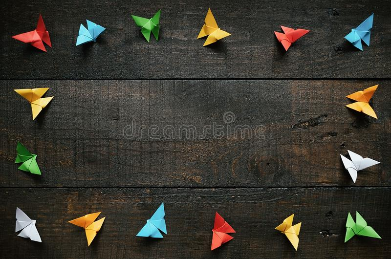

Origami Instructions and Diagrams
Step by step diagrams are probebly the most popular and easiest to follow way to
show how to fold things out of paper.
Trying to find good origami instructions on the internet can be a lot of work though. To
help your search we've put together the largest database of free origrami diagrams anywhere on the internet.
IT WILL HEPL YOU
just click on photos you will get steps

chameleons
Intresting facts about chameleon
chameleons are reptiels that are part of the iguana suborder.
changing skin colour is an important part of communication among chameleons.
most chameleons have a prehensile tail that they use a wrap around tree branches.

pigeon
Intresting facts about pigeon
- pigeons are incredibly complex and intelligent animals.
- pigeons are reowned for their outstanding navigational abilities.
- pigeons have excellent hearing abilities.

camel
Intresting facts about camel
chameleons are reptiels that are part of the iguana suborder.
changing skin colour is an important part of communication among chameleons.
most chameleons have a prehensile tail that they use a wrap around tree branches.

teddy
Intresting facts about teddy
chameleons are reptiels that are part of the iguana suborder.
changing skin colour is an important part of communication among chameleons.
most chameleons have a prehensile tail that they use a wrap around tree branches.

panda
Intresting facts about panda
chameleons are reptiels that are part of the iguana suborder.
changing skin colour is an important part of communication among chameleons.
most chameleons have a prehensile tail that they use a wrap around tree branches.

cicada
Intresting facts about cicada
chameleons are reptiels that are part of the iguana suborder.
changing skin colour is an important part of communication among chameleons.
most chameleons have a prehensile tail that they use a wrap around tree branches.